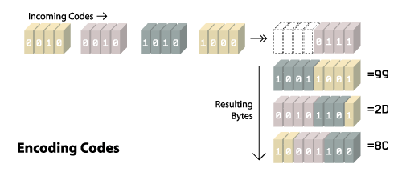
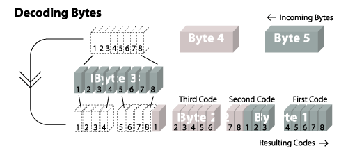

What's In A GIF |
(LZW image data) |
Now let's look at exactly how we go about storing an image in a GIF file. The GIF format is a raster format, meaning it stores image data by remembering the color of every pixel in the image. More specifically, GIF files remember the index of the color in a color table for each pixel. To make that clearer, let's review the sample image we used in the first section.
Actual Size(10x10) |
Enlarged (100x100) |
Color Table
|
The color table came from the global color table block. The colors are listed in the order which they appear in the file. The first color is given an index of zero. When we send the codes, we always start at the top left of the image and work our way right. When we get to the end of the line, the very next code is the one that starts the next line. (The decoder will "wrap" the image based on the image dimensions.) We could encode our sample image in the following way:
1, 1, 1, 1, 1, 2, 2, 2, 2, 2, 1, 1, 1, 1, 1, 2, 2, 2, 2, 2, 1, 1, 1, 1, 1, 2, 2, 2, 2, 2, 1, 1, 1, 0, 0, 0, 0, 2, 2, 2, 1, 1, 1, 0, 0, 0, 0, 2, 2, 2, ...
The above listing shows the sequence required to render the first five lines of the image. We could continue with this method until we've specified the color for every pixel; however, this can result in a rather large file. Luckily for us, the GIF format allows us to take advantage of repetition in our output and to compress our data.
Much of the following information came from John Barkaus's tutorial LZW and GIF Explained, which seems to have fallen off the web. I've tried to provide more detailed samples as well as illustrations to make the process even clearer
The compression method GIF use is a variant of LZW (Lempel-Ziv-Welch) compression. To start using this method, we need a code table. This code table will allow us to use special codes to indicate a sequence of colors rather than just one at a time. The first thing we do is to initialize the code table. We start by adding a code for each of the colors in the color table. This would be a local color table if one was provided, or the global color table. (I will be starting all codes with "#" to distinguish them from color indexes.)
| Code | Color(s) |
|---|---|
| #0 | 0 |
| #1 | 1 |
| #2 | 2 |
| #3 | 3 |
| #4 | Clear Code |
| #5 | End Of Information Code |
I added a code for each of the colors in the global color table of our sample image. I also snuck in two special control codes. (These special codes are only used in the GIF version of LZW, not in standard LZW compression.) Our code table is now considered initialized.
Let me now explain what those special codes are for. The first new code is the clear code (CC). Whenever you come across the clear code in the image data, it's your cue to reinitialize the code table. (I'll explain why you might need to do this in a bit.) The second new code is the end of information code (EOI). When you come across this code, this means you've reached the end of the image. Here I've placed the special codes right after the color codes, but actually the value of the special codes depends on the value of the LZW minimum code size from the image data block. If the LZW minimum code size is the same as the color table size, then special codes immediatly follow the colors; however it is possible to specify a larger LWZ minimum code size which may leave a gap in the codes where no colors are assigned. This can be summarizaed in the following table.
| LWZ Min Code Size | Color Codes | Clear Code | EOI Code |
|---|---|---|---|
| 2 | #0-#3 | #4 | #5 |
| 3 | #0-#7 | #8 | #9 |
| 4 | #0-#15 | #16 | #17 |
| 5 | #0-#31 | #32 | #33 |
| 6 | #0-#63 | #64 | #65 |
| 7 | #0-#127 | #128 | #129 |
| 8 | #0-#255 | #256 | #257 |
Before we proceed, let me define two more terms. First the index stream will be the list of indexes of the color for each of the pixels. This is the input we will be compressing. The code stream will be the list of codes we generate as output. The index buffer will be the list of color indexes we care "currently looking at." The index buffer will contain a list of one or more color indexes. Now we can step though the LZW compression algorithm. First, I'll just list the steps. After that I'll walk through the steps with our specific example.
Seems simple enough, right? It really isn't all that bad. Let's walk though our sample image to show you how this works. (The steps I will be describing are summarized in the following table. Numbers highlighted in green are in the index buffer; numbers in purple are the current K value.) We have already initialized our code table. We start by doing two things: we output our clear code (#4) to the code stream, and we read the first color index from the index stream, 1, into our index buffer [Step 0].
Now we enter the main loop of the algorithm. We read the next index in the index stream, 1, into K [Step 1]. Next we see if we have a record for the index buffer plus K in the code stream. In this case we looking for 1,1. Currently our code table only contains single colors so this value is not in there. Now we will actually add a new row to our code table that does contain this value. The next available code is #6, we will let #6 be 1,1. Note that we do not actually send this code to the code stream, instead we send just the code for the value(s) in the index buffer. The index buffer is just 1 and the code for 1 is #1. This is the code we output. We now reset the index buffer to just the value in K and K becomes nothing. [Step 2].
We continue by reading the next index into K. [Step 3]. Now K is 1 and the index buffer is 1. Again we look to see if there is a value in our code table for the buffer plus K (1,1) and this time there is. (In fact we just added it.) Therefore we add K to the end of the index buffer and clear out K. Now our index buffer is 1,1. [Step 4].
The next index in the index stream is yet another 1. This is our new K [Step 5]. Now the index buffer plus K is 1,1,1 which we do not have a code for in our code table. As we did before, we define a new code and add it to the code table. The next code would be #7; thus #7 = 1, 1, 1. Now we kick out the code for just the values in the index buffer (#6 = 1,1) to the code stream and set the index buffer to be K. [Step 6].
| Step | Action | Index Stream | New Code Table Row | Code Stream |
|---|---|---|---|---|
| 0 | Init | 1 1 1 1 1 2 2 2 2 2 1 1 1 1... | #4 | |
| 1 | Read | 1 1 1 1 1 2 2 2 2 2 1 1 1 1... | #4 | |
| 2 | Not Found | 1 1 1 1 1 2 2 2 2 2 1 1 1 1... | #6 - 1, 1 | #4 #1 |
| 3 | Read | 1 1 1 1 1 2 2 2 2 2 1 1 1 1... | #4 #1 | |
| 4 | Found | 1 1 1 1 1 2 2 2 2 2 1 1 1 1... | #4 #1 | |
| 5 | Read | 1 1 1 1 1 2 2 2 2 2 1 1 1 1... | #4 #1 | |
| 6 | Not Found | 1 1 1 1 1 2 2 2 2 2 1 1 1 1... | #7 - 1, 1, 1 | #4 #1 #6 |
| 7 | Read | 1 1 1 1 1 2 2 2 2 2 1 1 1 1... | #4 #1 #6 | |
| 8 | Found | 1 1 1 1 1 2 2 2 2 2 1 1 1 1... | #4 #1 #6 | |
| 9 | Read | 1 1 1 1 1 2 2 2 2 2 1 1 1 1... | #4 #1 #6 | |
| 10 | Not Found | 1 1 1 1 1 2 2 2 2 2 1 1 1 1... | #8 - 1, 1, 2 | #4 #1 #6 #6 |
| 11 | Read | 1 1 1 1 1 2 2 2 2 2 1 1 1 1... | #4 #1 #6 #6 | |
| 12 | Not Found | 1 1 1 1 1 2 2 2 2 2 1 1 1 1... | #9 - 2, 2 | #4 #1 #6 #6 #2 |
| 13 | Read | 1 1 1 1 1 2 2 2 2 2 1 1 1 1... | #4 #1 #6 #6 #2 | |
| 14 | Found | 1 1 1 1 1 2 2 2 2 2 1 1 1 1... | #4 #1 #6 #6 #2 | |
| 15 | Read | 1 1 1 1 1 2 2 2 2 2 1 1 1 1... | #4 #1 #6 #6 #2 | |
| 16 | Not Found | 1 1 1 1 1 2 2 2 2 2 1 1 1 1... | #10 - 2, 2, 2 | #4 #1 #6 #6 #2 #9 |
| 17 | Read | 1 1 1 1 1 2 2 2 2 2 1 1 1 1... | #4 #1 #6 #6 #2 #9 | |
| 18 | Found | 1 1 1 1 1 2 2 2 2 2 1 1 1 1... | #4 #1 #6 #6 #2 #9 | |
| 19 | Read | 1 1 1 1 1 2 2 2 2 2 1 1 1 1... | #4 #1 #6 #6 #2 #9 | |
| 20 | Not Found | 1 1 1 1 1 2 2 2 2 2 1 1 1 1... | #11 - 2, 2, 1 | #4 #1 #6 #6 #2 #9 #9 |
| 21 | Read | 1 1 1 1 1 2 2 2 2 2 1 1 1 1... | #4 #1 #6 #6 #2 #9 #9 | |
| 22 | Found | 1 1 1 1 1 2 2 2 2 2 1 1 1 1... | #4 #1 #6 #6 #2 #9 #9 | |
| 23 | Read | 1 1 1 1 1 2 2 2 2 2 1 1 1 1... | #4 #1 #6 #6 #2 #9 #9 | |
| 24 | Found | 1 1 1 1 1 2 2 2 2 2 1 1 1 1... | #4 #1 #6 #6 #2 #9 #9 | |
| 25 | Read | 1 1 1 1 1 2 2 2 2 2 1 1 1 1... | #4 #1 #6 #6 #2 #9 #9 | |
| 26 | Not Found | 1 1 1 1 1 2 2 2 2 2 1 1 1 1... | #12 - 1, 1, 1, 1 | #4 #1 #6 #6 #2 #9 #9 #7 |
I've included a few more steps to help you see the pattern. You keep going until you run out of indexes in the index stream. When there is nothing new to read, you simply write out the code for whatever values you may have in your index buffer. Finally you should send the end-of-information code to the code stream. In this example, that code is #5. (View the complete code table.)
As you can see we dynamically built many new codes for our code table as we compressed the data. For large files this can turn into a large number of codes. It turns out that the GIF format specifies a maximum code of #4095 (this happens to be the largest 12-bit number). If you want to use a new code, you have to clear out all of your old codes. You do this by sending the clear code (which for our sample was the #4). This tells the decoder that you are reinitializing your code table and it should too. Then you start building your own codes again starting just after the value for your end-of-information code (in our sample, we would start again at #6).
The final code stream would look like this:
#4 #1 #6 #6 #2 #9 #9 #7 #8 #10 #2 #12 #1 #14 #15 #6 #0 #21 #0 #10 #7 #22 #23 #18 #26 #7 #10 #29 #13 #24 #12 #18 #16 #36 #12 #5
This is only 36 codes versus the 100 that would be required without compression.
At some point we will need to turn this code stream back into a picture. To do this, we only need to know the values in the stream and the size of the color table that was used. That's it. You remember that big code table we built during compression? We actually have enough information in the code stream itself to be able to rebuild it.
Again, i'll list the algorithm and then we will walk though an example. Let me define a few terms i will be using. CODE will be current code we're working with. CODE-1 will be the code just before CODE in the code stream. {CODE} will be the value for CODE in the code table. For example, using the code table we created during compression, if CODE=#7 then {CODE}=1,1,1. In the same way, {CODE-1} would be the value in the code table for the code that came before CODE. Looking at step 26 from the compression, if CODE=#7, then {CODE-1} would be {#9}, not {#6}, which was 2,2.
Let's start reading though the code stream we've created to show how to turn it back into a list of color indexes. The first value in the code stream should be a clear code. This means we should initialize our code table. To do this we must know how many colors are in our color table. (This information comes from the first byte in the image data block in the file. More on this later.) Again we will set up codes #0-#3 to be each of the four colors and add in the clear code (#4) and end of information code (#5).
The next step is to read the first color code. In the following table you will see the values of CODE highlighted in purple, and the values for CODE-1 highlighted in green. Our first CODE value is #1. We then output {#1}, or simply 1, to the index stream [Step 0].
Now we enter the main loop of the algorithm. The next code gets assigned to CODE which now makes that value #6. Next we check to see if this value is in our code table. At this time, it is not. This means we must find the first index in the value of {CODE-1} and call this K. Thus K = first index of {CODE-1} = first index of {#1} = 1. Now we output {CODE-1} + K to the index stream and add this value to our code table. The means we output 1,1 and give this value a code of #6 [Step 1].
| Step | Action | Code Stream | New Code Table Row | Index Stream |
|---|---|---|---|---|
| 0 | Init | #4 #1 #6 #6 #2 #9 #9 #7 ... | 1 | |
| 1 | Not Found | #4 #1 #6 #6 #2 #9 #9 #7 ... | #6 - 1, 1 | 1, 1, 1 |
| 2 | Found | #4 #1 #6 #6 #2 #9 #9 #7 ... | #7 - 1, 1, 1 | 1, 1, 1, 1, 1 |
| 3 | Found | #4 #1 #6 #6 #2 #9 #9 #7 ... | #8 - 1, 1, 2 | 1, 1, 1, 1, 1, 2 |
| 4 | Not Found | #4 #1 #6 #6 #2 #9 #9 #7 ... | #9 - 2, 2 | 1, 1, 1, 1, 1, 2, 2, 2 |
| 5 | Found | #4 #1 #6 #6 #2 #9 #9 #7 ... | #10 - 2, 2, 2 | 1, 1, 1, 1, 1, 2, 2, 2, 2, 2 |
| 6 | Found | #4 #1 #6 #6 #2 #9 #9 #7 ... | #11 - 2, 2, 1 | 1, 1, 1, 1, 1, 2, 2, 2, 2, 2, 1, 1, 1 |
We start the loop again by reading the next code. CODE now would be #6 and this time we do have a record for this code in our code table. Thus we dump {#6} to the index stream which would be 1,1. Now we take the first index in {#6} and call that K. Here, {#6} has two indexes, the first of which is 1; thus K = 1. Before moving on, we add {CODE-1}+K to the code table. This #7 is now 1, 1, 1 [Step 2].
I've included a few more steps so you can see the algorithm in action. While the explanation may sound complicated, you can see it's actually quite simple. You'll also notice that you end up building the exact same code table as the one that was created during compression. This is the reason that LZW is so great; we can just share the codes and not the table.
I've shown you how to go back and forth between index and code stream, but haven't told you what to do with them. The index stream is used to specify the color of each of the pixel of your image and really only shows up on screen. It is the code stream that is actually saved in the GIF files on your computer or transmitted over the internet. In order to save these code streams, we must turn them into bytes. The first thought might be to store each of the codes as its own byte; however this would limit the max code to just #255 and result in a lot of wasted bits for the small codes. To solve these problems, the GIF file format actually uses flexible code sizes.
Flexible code sizes allow for further compression by limiting the bits needed to save the code stream as bytes. The code size is the number of bits it takes to store the value of the code. When we talk about bits, we're referring to the 1's and 0's that make up a byte. The codes are converted to their binary values to come up with the bits. To specify the code for #4, you would look at this binary equivalent, which is 100, and see that you would need three bits to store this value. The largest code value in our sample code stream is #36 (binary: 100100) which would take 6 bits to encode. Note that the number of bits i've just given is the minimum number. You can make the number take up more bits by adding zeros to the front.

We need a way to know what size each of the codes are. Recall that the image data block begins with a single byte value called the LZW minimum code size. The GIF format allows sizes as small as 2 bits and as large as 12 bits. This minimum code size value is typically the number of bits/pixel of the image. So if you have 32 colors in your image, you will need 5 bits/pixel (for numbers 0-31 because 31 in binary is 11111). Thus, this will most likely be one more than the bit value for the size of the color table you are using. (Even if you only have two colors, the minimum code size most be at least 2.) Refer to the code table above to remind yourself how that works.
Here's the funny thing: the value for minimum code size isn't actually the smallest code size that's used in the encoding process. Because the minimum code size tells you how many bits are needed just for the different colors of the image, you still have to account for the two special codes that we always add to the code table. Therefore the actual smallest code size that will be used is one more than the value specified in the "minimum" code size byte. I'll call this new value the first code size.
We now know how many bytes the first code will be. This size will probably work for the next few codes as well, but recall that the GIF format allows for flexible code sizes. As larger code values get added to your code table, you will soon realize that you need larger code sizes if you were to output those values. When you are encoding the data, you increase your code size as soon as your write out the code equal to 2^(current code size)-1. If you are decoding from codes to indexes, you need to increase your code size as soon as you add the code value that is equal to 2^(current code size)-1 to your code table. That is, the next time you grab the next section of bits, you grab one more.
Note that the largest code size allowed is 12 bits. If you get to this limit, the next code you encounter should be the clear code which would tell you to reinitialize the code table. You then go back to using the first code size and grow again when necessary.
Jumping back to our sample image, we see that we have a minimum code size value of 2 which means out first code size will be 3 bits long. Out first three codes, #1 #6 and #6, would be coded as 001 110 and 110. If you see at Step 6 of the encoding, we added a code of #7 to our code table. This is our clue to increase our code size because 7 is equal to 2^3-1 (where 3 is our current code size). Thus, the next code we write out, #2, will use the new code size of 4 and therefore look like 0010. In the decoding process, we again would increase our code size when we read the code for #7 and would read the next 4, rather than the next 3 bits, to get the next code. In the sample table above this occurs in Step 2.
Finally we must turn all these bit values into bytes. The lowest bit of the code bit value gets placed in the lowest available bit of the byte. After you've filled up the 8 bits in the byte, you take any left over bits and start a new byte. Take a look at the following illustration to see how that works with the codes from our sample image.

You can see in the first byte that was returned (8C) that the lowest three bits (because that was our first code size) contain 110 which is the binary value of 4 so that would be the clear code we started with, #4. In the three bits to the left, you see 001 which out or first data code of #1. You can also see when we switched into code sizes of 4 bits in the second byte (2D).
When you run out of codes but have filled less than 8 bits of the byte, you should just fill the remaining bits with zeros. Recall that the image data must be broken up onto data sub-blocks. Each of the data sub-blocks begins with a byte that specifies how many bytes of data. The value will be between 1 and 255. After you read those bytes, the next byte indicates again how many bytes of data follow. You stop when you encounter a subblock that has a lenght of zero. That tells you when you've reached the end of the image data. In our sample the image the byte just after the LZW code size is 16 which indicates that 22 bytes of data follow. After we reach those, we see the next byte is 00 which means we are all done.
Return codes from bytes the basically just the same process in reverse. A sample illustration of the process follows which shows how you would extract codes if the first code size were 5 bits.

That is pretty much everything you need to know to read or generate a basic image file. One of the reasons the GIF becames such a popular format was because it also allowed for "fancier" features. These features include animation and transparency. Next we'll look at how those work.